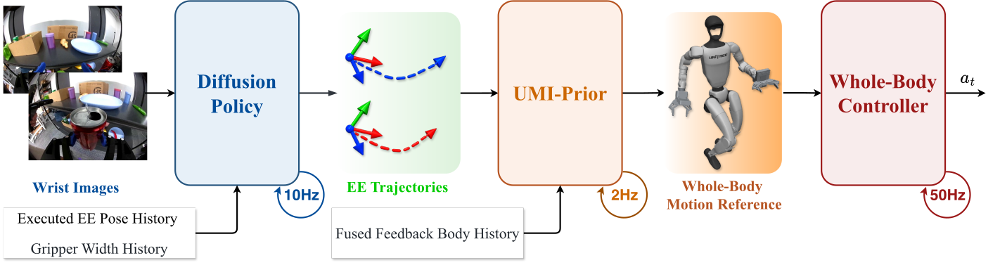
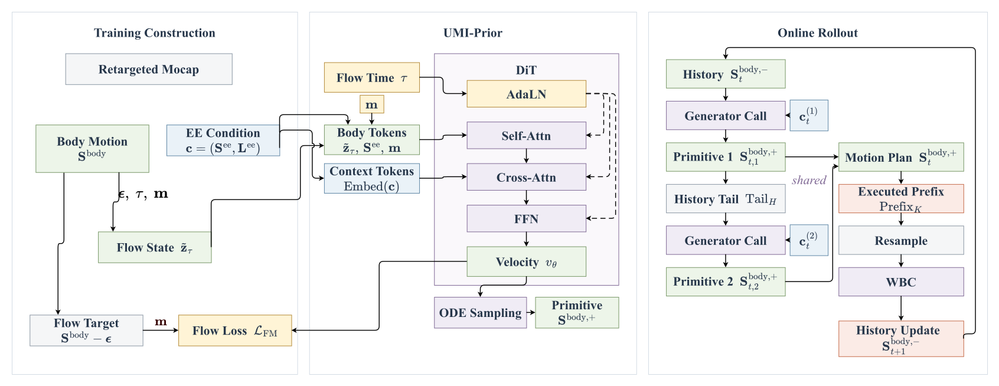

Behavior-cloning policy
Wrist RGB observations and executed EE history produce a receding-horizon, bimanual end-effector plan plus gripper commands.
Transfer UMI Manipulation Skill to Humanoid Whole-Body Manipulation via Real-Time Motion Generation
ICRA 2027 Submission · Anonymous Authors
Humanoid loco-manipulation needs task-specific demonstrations and whole-body coordination, yet collecting both is costly. UMI gives us a practical, task-centric end-effector interface, but it does not say how a high-DoF humanoid should coordinate its torso, legs, and balance.
UMI-Prior fills in the body. It converts native bimanual UMI trajectories into coordinated whole-body references using a task-agnostic generator trained on independent motion-capture data, with no body trackers and no paired UMI/whole-body demonstrations.
One interface, four tasks
The same EE-only demonstration interface drives drawer closing, shelf pick-and-place, ball toss, and locomotion-plus-manipulation.
 Open full-size SVG
Open full-size SVG
Closed-loop hierarchy
Three independently useful layers meet through explicit, inspectable trajectory and motion-reference interfaces.

Open full-size SVGWrist RGB observations and executed EE history produce a receding-horizon, bimanual end-effector plan plus gripper commands.
A masked flow-matching generator completes the sparse EE plan into two coordinated whole-body motion primitives.
A pretrained SONIC tracker follows the generated 29-DoF reference while execution feedback corrects the next plan.
Real-time motion completion
Retargeted mocap teaches whole-body structure; native UMI trajectories remain the only task-specific condition.

Open full-size SVGUMI-Prior models motion as short, fixed-length primitives. Each prediction receives eight history frames and generates 32 future frames at 30 Hz. A second application of the same generator extends the rollout, while look-ahead EE commands communicate future intent beyond the current primitive.
This explicit reference layer decouples the manipulation policy from the controller: the policy can focus on task progress, UMI-Prior supplies coordination, and the controller remains responsible for physical tracking.
 Open full-size SVG
Open full-size SVG
Reference completion and execution
Look-ahead improves offline motion fidelity, while feedback reduces whole-body execution error in simulation.
Tracker-free completion. The full EE-only model achieves 4.25 cm EE position error and a 0.0202 FID on the held-out motion test set. EE look-ahead improves most tracking and motion-quality metrics over the no-look-ahead ablation.
Closed-loop execution. In simulated shelf pick-and-place, measured-state feedback reduces EE orientation error from 6.76 degrees to 4.97 degrees and root-relative MPJPE from 0.024 m to 0.017 m.
Real-world transfer
Each task uses 200 UMI demonstrations collected in about 90 minutes, then deploys the complete hierarchy on a 29-DoF G1 humanoid.
The robot follows the EE plan to reach the handle, lower its body, and close the drawer while maintaining balance.
The robot transfers a bottle from the lower shelf to the upper shelf by coordinating manipulation across different working heights.
A dynamic, timed release tests whether the hierarchy can coordinate high-speed whole-body motion beyond quasi-static manipulation.
The robot walks to the table and performs pick-and-place, exposing the remaining gap between kinematic feasibility and controller dynamics.
Citation
The author list and public artifact links will be updated after anonymous review.
@article{anonymous2027umiprior,
title = {UMI-Prior: Transfer UMI Manipulation Skill to Humanoid
Whole-Body Manipulation via Real-Time Motion Generation},
author = {Anonymous Authors},
year = {2027},
note = {Under review}
}